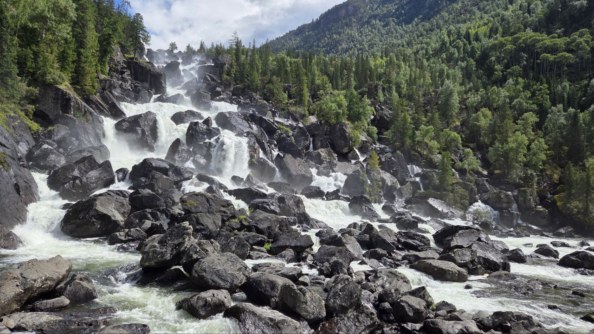
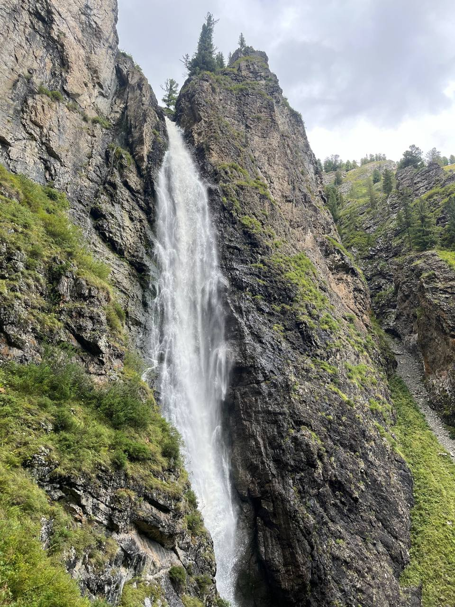
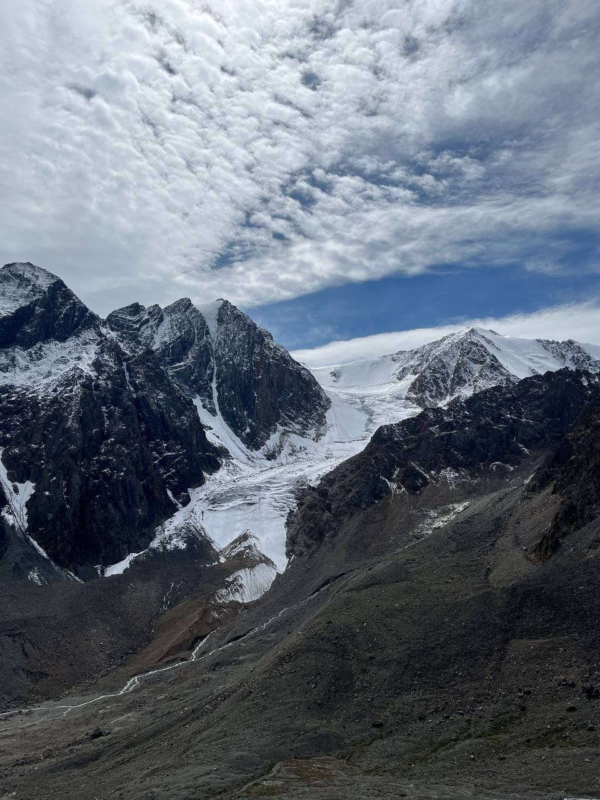
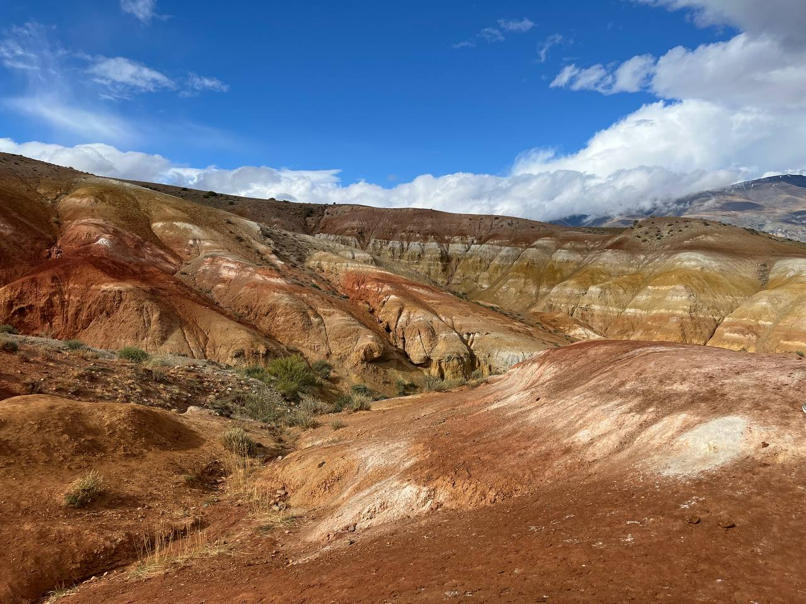
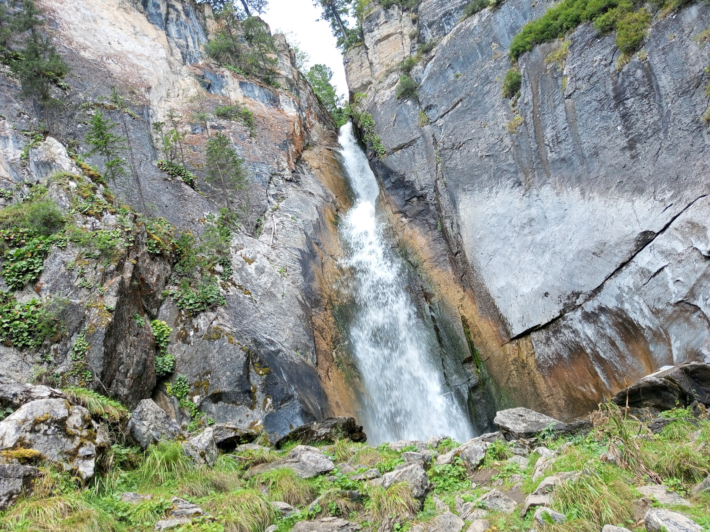
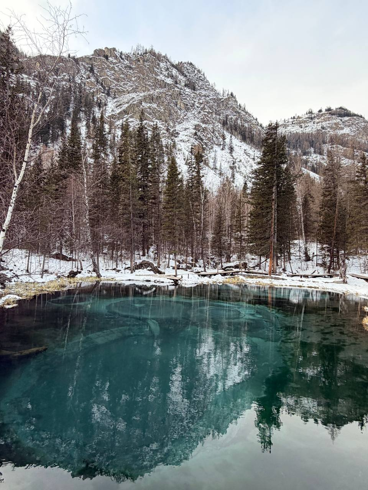
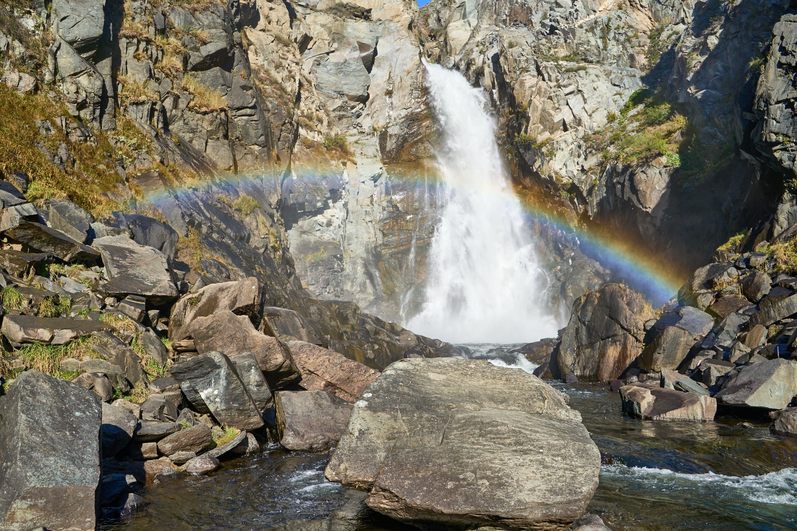
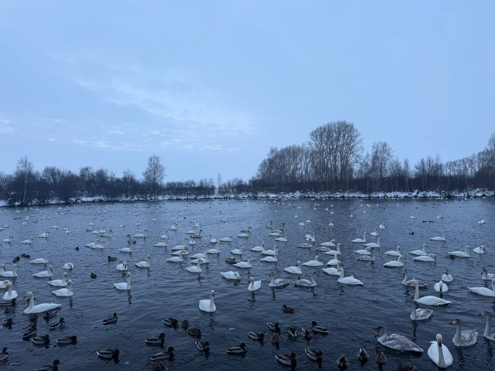
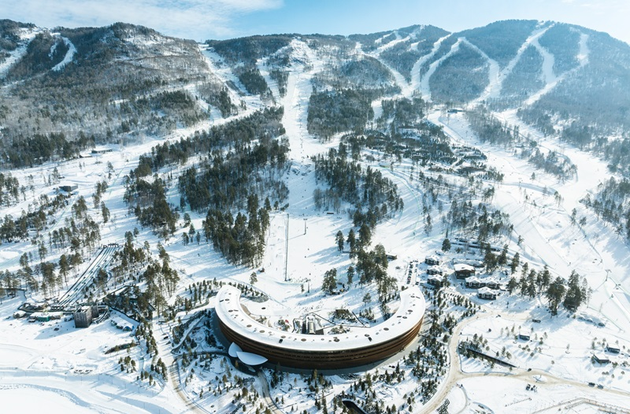

Сокровища удивительного края
Алтай — это мир, где за каждым поворотом открывается новая страница природы: бирюзовые озёра, мощные водопады, марсианские пейзажи и тёплые озёра с зимующими лебедями.
Алтай — это мир, где за каждым поворотом открывается новая страница природы: бирюзовые озёра, мощные водопады, марсианские пейзажи и тёплые озёра с зимующими лебедями.

Высокогорное озеро на высоте около 2000 метров с кристально-бирюзовой водой.
Водопад Куйгук достигает 30 метров. Маршрут проходит через кедровый лес и альпийские луга.

Самый большой каскадный водопад Горного Алтая — около 160 метров высотой.
Маршрут средней сложности, требуется целый день и удобная обувь.

Крупный ледник длиной около 8 км в Северо-Чуйском хребте.
Рядом находится Голубое озеро ледникового цвета.

Разноцветные глиняные горы с красными, оранжевыми и зелёными оттенками.
Пейзажи напоминают поверхность другой планеты.

Каскад из трёх живописных водопадов в глубоком ущелье.
Идеальное место для спокойного семейного отдыха.

Небольшое озеро диаметром около 30 м с причудливыми узорами на поверхности.
Рисунки создаются выбросами голубой глины со дна.

Мощный водопад высотой около 30 метров на реке Куркуре.
Маршрут подходит для подготовленных туристов.

Озеро Светлое не замерзает зимой благодаря тёплым ключам.
Здесь ежегодно зимует до 500 лебедей.

Современный всесезонный туристический комплекс.
Горнолыжные трассы, канатная дорога и развитая инфраструктура.
